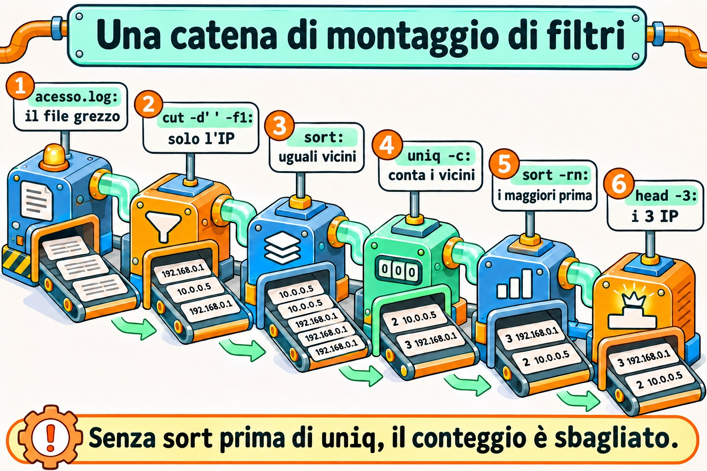
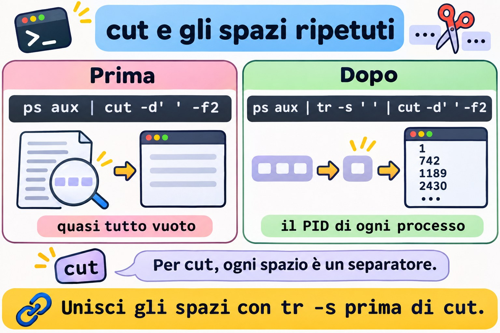
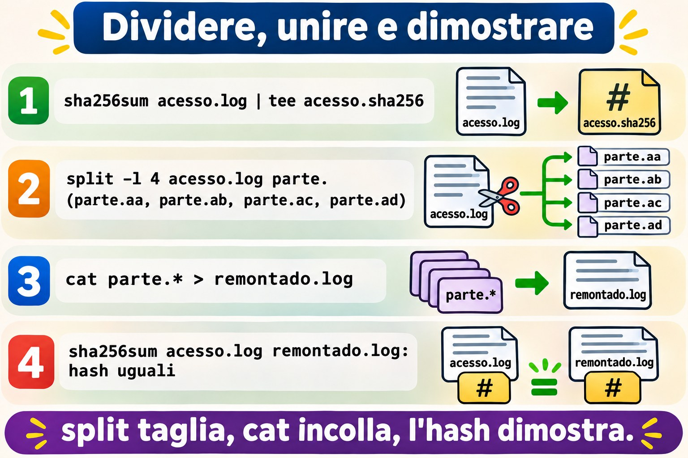
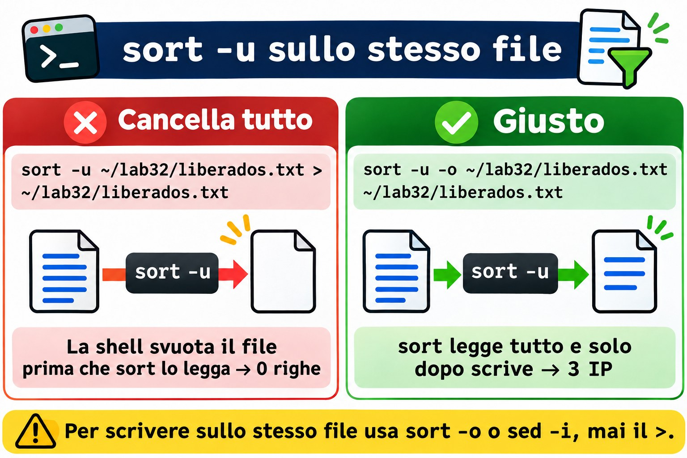

Lezione 3.2 · Filtri di testo
Nella Lezione 3.1 hai imparato a collegare i comandi: chi legge da dove, chi scrive dove, e come una pipe fallisce davvero. Oggi impari cosa mettere in mezzo alla pipe. Un server parla in testo: log, /etc/passwd, l'output di ps, di ss, di du. La domanda della richiesta non è quasi mai "mostrami il log". È "chi altro ha sbagliato la password", "quale cartella ha riempito il disco", "quanti errori 500 dalle otto". La risposta è una catena di filtri: cut ritaglia colonne, sort ordina, uniq conta, tr sostituisce e pulisce caratteri, paste unisce, nl numera, split divide, od mostra i byte che non vedi, e sha256sum dimostra che due file sono uguali. Alla fine della lezione, un log diventa un report con uno script di dieci righe, uguale sulle due VM.
| Scheda | Lezione 3.2 |
|---|---|
| Modulo | M3 · Testo ed editor, lezione 2 di 5 |
| Quando | Settimana 7 |
| Alla fine sei in grado di | Ritagliare colonne con cut, anche da output con più spazi; ordinare per numero, per dimensione leggibile e per una colonna specifica con sort -t -k; contare le occorrenze con sort | uniq -c | sort -rn; pulire e sostituire caratteri con tr, e sapere quando non va bene; unire righe e colonne con paste; numerare con nl; dividere e rimontare file con split e cat, e dimostrare l'integrità con sha256sum; trovare un \r di Windows con od; leggere i log ruotati con zcat; trasformare un log in un report |
| Prerequisiti | Lezione 1.5 (head, tail, wc, grep di base); Lezione 3.1 (pipe, here-doc, pipefail, ssh deb) |
| Durata | Circa 2h30 |
| Snapshot | m3a2-inicio e m3a2-fim su entrambe le VM |
1 · Riscaldamento
Tre domande, a memoria. Scrivi le risposte; le Soluzioni le controllano alla fine.
- Un file ha le righe
b,a,b,a, in quest'ordine. Prova a indovinare: quante righe restano dopouniq? - Hai un elenco di dimensioni:
512M,1.2G,40K. Prova a indovinare:sort -nmette1.2Gin fondo? - Un collega ti manda uno script fatto con il Blocco note. Lo esegui e ricevi
/bin/bash^M: bad interpreter. Prova a indovinare: cos'è quel^M?
2 · Perché conta
I filtri sembrano roba da corso, finché non arriva la prima notte di incidente:
| La richiesta | La risposta sbagliata | Cosa provoca |
|---|---|---|
| "Chi sta attaccando il login del sito?" | Aprire il log con less e scorrere | Venti minuti per trovare ciò che un sort | uniq -c | sort -rn | head mostra in un secondo. Intanto l'attacco continua |
| "Quale cartella ha riempito il disco?" | du -sh * | sort -rn | head -1 | Mostra 512M come la più grande, e quella da 3.5G resta fuori. Qualcuno cancella la cartella sbagliata |
| "Conta quanti IP diversi hanno acceduto oggi" | cut ... | uniq | wc -l | Lo uniq unisce solo righe adiacenti. Il numero esce gonfiato, e il report va al cliente così |
| "Il foglio degli utenti arriva da Windows, crea gli account" | Leggere il CSV direttamente in un ciclo | Ogni nome finisce con un \r invisibile: useradd crea ana\r, e nessuno riesce a entrare come ana |
| "Il file da 2 GB è arrivato corrotto dal fornitore" | Rimandarlo, e di nuovo | Senza sha256sum da entrambi i lati, nessuno sa se il problema è l'invio, il disco o il file d'origine |
| "Ci servono i log della settimana scorsa" | grep su /var/log/messages | I giorni precedenti sono ruotati, a volte in .gz. Il grep non legge i file compressi; zgrep e zcat sì |
Chi risolve in fretta non conosce più comandi. Sa costruire la riga giusta: ritagliare, ordinare, contare, in quest'ordine.
3 · Modello mentale
Un filtro è un comando che legge righe dall'input, fa una sola cosa con esse e scrive righe sull'output. Per impostazione predefinita, nessun filtro modifica il file originale; a scrivere sul file stesso sono opzioni come
sed -iesort -o. Costruisci il report come una catena di montaggio: ogni filtro riceve ciò che ha consegnato il precedente, e il successivo vede solo ciò che è rimasto.
A pergunta: "quais IPs mais acessaram?"
acesso.log ─▶ cut -d' ' -f1 ─▶ sort ─▶ uniq -c ─▶ sort -rn ─▶ head -3
(15 linhas) (só o IP) (iguais (conta os (maior (os 3
ficam vizinhos) número primeiros)
juntos) primeiro)
O que passa em cada etapa:
10.1.0.20 10.1.0.20 10.1.0.20 4 10.1.0.20 5 192.168.5.7
10.1.0.31 10.1.0.20 10.1.0.20 2 10.1.0.31 4 10.1.0.20
10.1.0.20 ─▶ 10.1.0.20 ─▶ ... ─▶ 1 10.1.0.45 ─▶ 3 203.0.113.9
192.168.5.7 10.1.0.20 10.1.0.31 5 192.168.5.7 2 10.1.0.31
... 10.1.0.31 ... 3 203.0.113.9 1 10.1.0.45
Por que o sort vem ANTES do uniq:
sem sort: a b b a ─▶ uniq -c ─▶ 1 a 2 b 1 a (o "a" aparece duas vezes)
com sort: a a b b ─▶ uniq -c ─▶ 2 a 2 b (agora conta de verdade)Tre domande per ogni filtro, prima di usarlo: cos'è una colonna per lui (un separatore fisso? qualsiasi spazio?), cos'è uguale per lui (byte per byte? secondo la lingua?), e cos'è un carattere per lui (un byte? una lettera accentata?). Quasi ogni risultato sbagliato della lezione nasce da una di queste tre risposte.


4 · Concetto a strati
Essenziale
Il file del lab. Tutti gli esempi usano lo stesso log di accesso di un web server, che crei nel Passo 0. Una sua riga, con ogni campo separato da uno spazio:
192.168.5.7 - - [03/Nov/2026:08:02:30 +0100] "POST /login HTTP/1.1" 401 128
1 2 3 4 5 6 7 8 9 10Il campo 1 è l'IP, il 7 è il percorso richiesto, il 9 è lo status HTTP e il 10 è la dimensione della risposta in byte.
Il cut ritaglia. Per campo, con un separatore di un carattere, oppure per posizione:
cut -d' ' -f1 acesso.log # solo l'IP
cut -d' ' -f7,9 acesso.log # il percorso e lo status
cut -d: -f1,3 /etc/passwd # nome e UID
cut -c1-3 acesso.log # i primi tre caratteri di ogni riga
cut -d: -f1 --complement /etc/passwd # tutto, tranne il campo 1 (GNU)Senza -d, il separatore è la tabulazione. Il -f accetta elenchi (1,3) e intervalli (2-4, 5-).
Il sort ordina. Per impostazione predefinita, come testo, secondo la lingua del sistema:
| Opzione | Cosa fa | Esempio |
|---|---|---|
-n | Per numero | sort -n numeros.txt |
-r | Inverte | sort -rn (prima il più grande) |
-h | Per dimensione leggibile: K, M, G | du -sh * | sort -h |
-u | Una sola per ogni riga uguale | sort -u nomes.txt |
-t X | Il separatore di campi è X | sort -t: |
-k N,N | Ordina per il campo N, solo quello | sort -t: -k3,3n /etc/passwd |
-o f | Scrive su f, anche se è il file di input | sort -o lista.txt lista.txt |
Lo uniq unisce righe uguali adiacenti. E solo adiacenti: per questo quasi sempre viene dopo un sort.
| Opzione | Cosa fa |
|---|---|
| (nessuna) | Una per ogni gruppo di righe uguali consecutive |
-c | Conta quante ce n'erano in ogni gruppo |
-d | Solo quelle che si ripetono |
-u | Solo quelle che compaiono una volta |
La frase che scriverai per tutta la vita: sort | uniq -c | sort -rn | head. Ritaglia prima, con cut, e risponde a "cosa compare di più".
wc, head e tail, ripassati. wc -l conta le righe; head -n 3 e tail -n 3 prendono le prime e le ultime. Un dettaglio nuovo: tail -n +2 parte dalla riga 2, cioè salta l'intestazione di un CSV.
Il tr sostituisce caratteri. Legge solo l'input: non accetta nomi di file.
tr a-z A-Z < arquivo # da minuscole a maiuscole
tr -d '\r' < win.txt > unix.txt # cancella il \r di Windows
tr -s ' ' < saida.txt # unisce gli spazi ripetuti in uno solo
tr ':' '\n' <<< "$PATH" # una directory del PATH per rigaIntermedio
Il cut e i molti spazi. Il cut -d' ' considera ogni spazio un separatore. Due colonne separate da tre spazi hanno, per lui, due campi vuoti nel mezzo. L'output di ps, di ls -l, di df e lo stesso /var/log/secure di Rocky allineano le colonne con spazi ripetuti. La soluzione è unire gli spazi prima:
ps aux | cut -d' ' -f2 # quasi tutto vuoto
ps aux | tr -s ' ' | cut -d' ' -f2 # il PID di ogni processoIl log di rsyslog ha una trappola di calendario: il giorno è allineato con uno spazio, Nov 3 dal giorno 1 al 9 e Nov 10 dal giorno 10 in poi. Un cut -d' ' -f5 che funziona il giorno 12 prende il campo sbagliato il giorno 3. Il tr -s ' ' risolve in entrambi i casi.


Il sort per colonna. Il -k senza fine (-k3) ordina dal campo 3 fino alla fine della riga; il -k3,3 ordina solo per il campo 3. Il tipo va insieme alla chiave:
sort -t: -k3,3n /etc/passwd # per UID, come numero
sort -k1,1nr -k2,2n relatorio.txt # per il campo 1, prima il più grande; a parità, per il campo 2Senza -n, 1000 viene prima di 2, perché il carattere 1 viene prima di 2. Ordinare numeri come testo è l'errore più comune del sort.
La lingua cambia l'ordine. Il sort confronta secondo la variabile LC_COLLATE (o LANG). In un sistema con en_US.UTF-8, maiuscole e minuscole si mescolano (a A b B) e la punteggiatura conta poco. Nella lingua C, l'ordine è quello dei byte: tutte le maiuscole prima delle minuscole. Per un risultato che non dipenda dal server, e più veloce su file grandi:
LC_ALL=C sort arquivoIl paste unisce. Colonne di file diversi, una accanto all'altra, oppure tutte le righe di un file in una sola:
paste nomes.txt uids.txt # riga 1 con riga 1, separate da tabulazione
paste -d: nomes.txt uids.txt # lo stesso, separate da ':'
cut -d: -f1 /etc/passwd | paste -sd, # tutti gli utenti su una riga, con la virgola
cut -d' ' -f10 acesso.log | paste -sd+ # 512+1024+2048+...: un calcolo prontoL'ultima riga diventa una somma con l'aritmetica di bash: echo $(( $(cut -d' ' -f10 acesso.log | paste -sd+) )).
L'nl numera. Come cat -n, ma per impostazione predefinita salta le righe vuote. nl -ba numera tutte. Serve per parlare di un file di configurazione: "guarda la riga 42".
I log ruotati. Il logrotate rinomina il log vecchio (messages-20261026) e, a seconda della configurazione, lo comprime (.gz). I filtri non leggono i file compressi, ma esistono versioni che li leggono:
| Per leggere | Compresso con | Usa |
|---|---|---|
.gz | gzip | zcat, zless, zgrep |
.bz2 | bzip2 | bzcat |
.xz | xz | xzcat |
zcat /var/log/messages-*.gz | grep -c sshdPonte Windows
| In Windows | In Linux | La differenza che conta |
|---|---|---|
| Aprire il CSV in Excel e filtrare | cut, sort, uniq | In Linux, il filtro gira sul server, senza copiare il file, e diventa uno script |
Sort-Object | sort | PowerShell ordina oggetti per proprietà; il sort ordina testo, e tu dici quale colonna e se è un numero |
Group-Object | sort | uniq -c | Lo uniq unisce solo gli adiacenti: il sort prima è obbligatorio |
Select-Object -First 5 | head -n 5 | Uguale |
Get-FileHash | sha256sum | Lo stesso SHA-256. L'hash di un file è uguale in Windows e in Linux, se i byte sono uguali |
Fine riga CRLF (\r\n) | Fine riga LF (\n) | Il \r resta in Linux, invisibile, in fondo a ogni riga. È l'origine di metà dei "lo script non parte" |
| Il Blocco note mostra gli accenti | od -c mostra i byte | In Linux vedi cosa c'è nel file, anche ciò che lo schermo nasconde |
Avanzato
Il tr non capisce gli accenti. Il tr di GNU lavora con i byte. In UTF-8, ç e ã hanno due byte ciascuno, e nessuno dei due è in a-z. Per questo tr a-z A-Z <<< "ação" restituisce AçãO. Per scambiare maiuscole e minuscole in un testo con accenti, in una lingua UTF-8:
palavra="ação"; echo "${palavra^^}" # AÇÃO, in bash
sed 's/.*/\U&/' <<< "ação" # AÇÃO, nel sed di GNUL'od mostra l'invisibile. od -c stampa ogni byte come carattere; -An toglie la colonna della posizione; -tx1 mostra in esadecimale. È così che scopri il \r di Windows, una tabulazione al posto degli spazi, o un carattere strano incollato da una pagina web:
printf 'ok\r\n' | od -c
# 0000000 o k \r \n
printf 'ação' | od -An -tx1
# 61 c3 a7 c3 a3 6fIl cat -A fa una cosa simile, in modo più breve: mostra ^M per il \r, ^I per la tabulazione e $ in fondo a ogni riga.
Lo split divide; il cat rimonta. Per inviare un file grande su un canale con un limite di dimensione, oppure per elaborare un log enorme a pezzi:
split -b 10M -d backup.tar.gz backup.part. # backup.part.00, .01, .02 ...
split -l 1000 lista.txt lista. # 1000 righe per pezzo: lista.aa, lista.ab ...
cat backup.part.* > backup-remontado.tar.gzIl -d usa numeri nel suffisso. Il cat backup.part.* rimonta nell'ordine giusto perché la shell espande l'* in ordine alfabetico, e 00 viene prima di 01.
L'hash dimostra. Il sha256sum calcola un'impronta digitale di 64 caratteri esadecimali. Un byte diverso cambia l'intero hash. Il -c verifica un elenco di hash salvato prima:
sha256sum backup.tar.gz > backup.sha256 # salva "hash nome"
sha256sum -c backup.sha256 # backup.tar.gz: OKmd5sum e sha1sum funzionano allo stesso modo, ma sono rotti per la sicurezza: qualcuno può fabbricare due file diversi con lo stesso hash. Per rilevare corruzioni accidentali servono ancora; per dimostrare che nessuno ha toccato il file, usa sha256sum o sha512sum. È ciò che le distribuzioni pubblicano accanto a ogni ISO.
Il join, da conoscere. Il join unisce due file ordinati per la colonna in comune, come un JOIN di database: join -t: <(sort -t: -k1,1 a) <(sort -t: -k1,1 b). Compare quasi mai nel quotidiano, perché l'awk della Lezione 3.4 fa lo stesso con più controllo.
5 · Rocky × Debian
| Cosa | rocky-lab | debian-lab | Come verificare |
|---|---|---|---|
cut, sort, uniq, tr, paste, nl, split, od, sha256sum | GNU coreutils 8.32 | GNU coreutils 9.1 | sort --version | head -1 |
Lingua predefinita del sort | Quella definita dall'installazione | Quella definita dall'installazione | locale; se le due VM differiscono, differisce anche l'ordine del sort |
awk | gawk | mawk | readlink -f "$(command -v awk)". Conta nella Lezione 3.4 |
Formato di /var/log/secure e /var/log/messages | rsyslog, formato tradizionale: Nov 3 08:02:30, con il giorno allineato con uno spazio | Non esistono: solo il journal | sudo head -n 2 /var/log/secure |
| Formato breve del journal | Nov 03 08:02:30, con lo zero | Nov 03 08:02:30, con lo zero | journalctl -n 2 |
| Log ruotati | Con la data nel nome (messages-20261026) | Con un numero (.1, .2.gz) | ls /var/log/ | head |
dos2unix | Non è installato | Non è installato | command -v dos2unix |
bc (calcolatrice) | Può non essere installato | Può non essere installato | command -v bc. La lezione usa $(( )), che è di bash |
La differenza che inganna di più è quella del log: la stessa domanda, con lo stesso cut, dà un risultato giusto un giorno e sbagliato un altro, su Rocky. Su Debian, il formato del journal non ha questo problema, ma il log non è nemmeno un file. Il Passo 4 mostra entrambi i casi.
6 · Lab guidato
Sei student, su rocky-lab, e raggiungi debian-lab con ssh deb. Tutto avviene in ~/lab32, su entrambe le VM; nessun passo tocca file di sistema, e i log reali vengono solo letti. Il Passo 7 è la sfida della lezione, e il report che genera resta lì per essere controllato dopo il reboot.

Passo 0 · Snapshot, percorso e il log del lab
In Proxmox, fai lo snapshot m3a2-inicio di entrambe le VM. Su rocky-lab:
eval "$(ssh-agent -s)"; ssh-add
ssh -o BatchMode=yes deb hostname
mkdir -p ~/lab32; ssh deb 'mkdir -p ~/lab32'
cd ~/lab32
locale | grep -E '^(LANG|LC_COLLATE)='; ssh deb "locale | grep -E '^(LANG|LC_COLLATE)='"Annota la lingua delle due VM: se sono diverse, anche il sort può ordinare in modo diverso. Ora il log del lab, con un here-doc tra virgolette, così la shell non tocca niente:
cat > acesso.log <<'EOF'
10.1.0.20 - - [03/Nov/2026:08:00:01 +0100] "GET / HTTP/1.1" 200 5120
10.1.0.31 - - [03/Nov/2026:08:00:15 +0100] "GET /docs HTTP/1.1" 200 2048
10.1.0.20 - - [03/Nov/2026:08:01:02 +0100] "GET /docs HTTP/1.1" 200 2048
192.168.5.7 - - [03/Nov/2026:08:02:30 +0100] "POST /login HTTP/1.1" 401 128
192.168.5.7 - - [03/Nov/2026:08:02:31 +0100] "POST /login HTTP/1.1" 401 128
203.0.113.9 - - [03/Nov/2026:08:03:10 +0100] "GET /admin HTTP/1.1" 403 256
192.168.5.7 - - [03/Nov/2026:08:03:12 +0100] "POST /login HTTP/1.1" 401 128
10.1.0.45 - - [03/Nov/2026:08:04:00 +0100] "GET /relatorio.pdf HTTP/1.1" 200 1048576
203.0.113.9 - - [03/Nov/2026:08:04:20 +0100] "GET /wp-login.php HTTP/1.1" 404 512
10.1.0.20 - - [03/Nov/2026:08:05:05 +0100] "GET /api/status HTTP/1.1" 500 64
192.168.5.7 - - [03/Nov/2026:08:05:40 +0100] "POST /login HTTP/1.1" 401 128
10.1.0.31 - - [03/Nov/2026:08:06:00 +0100] "GET /api/status HTTP/1.1" 500 64
203.0.113.9 - - [03/Nov/2026:08:06:30 +0100] "GET /.env HTTP/1.1" 404 512
192.168.5.7 - - [03/Nov/2026:08:07:01 +0100] "POST /login HTTP/1.1" 200 4096
10.1.0.20 - - [03/Nov/2026:08:07:30 +0100] "GET / HTTP/1.1" 200 5120
EOF
wc -l acesso.log15 acesso.logLeggi il file una volta, con calma. Un IP che prova /login più volte e riceve 401, un altro che cerca /wp-login.php e /.env su un sito che non è nemmeno WordPress: è esattamente ciò che vedi su un server esposto a internet.
Passo 1 · Lo uniq che non conta
Il capo chiede: "quanti IP diversi hanno acceduto?". Prima, solo l'IP di ogni riga:
cut -d' ' -f1 acesso.logQuindici righe, un IP per riga. Ora il tentativo rapido:
Decidi 1 · Esegui cut -d' ' -f1 acesso.log | uniq | wc -l. Che numero esce?
- A) 5
- B) 14
- C) 15
- D) 1
Scegli un'opzione prima di continuare.
cut -d' ' -f1 acesso.log | uniq | wc -l
cut -d' ' -f1 acesso.log | sort -u | wc -l| Se hai scelto | Risultato | Perché |
|---|---|---|
| A | ❌ Sbagliato | È la risposta giusta alla domanda, ma non è ciò che dà questo comando. Cinque esce dal secondo comando, con sort -u. |
| B | ✅ Giusto | Lo uniq unisce solo righe uguali adiacenti. Nel log, solo le righe 4 e 5 hanno lo stesso IP una sotto l'altra. Le altre ripetizioni sono sparse, e ognuna conta di nuovo. |
| C | ❌ Sbagliato | Lo uniq ha unito qualcosa, sì: le due righe consecutive di 192.168.5.7. |
| D | ❌ Sbagliato | Lo uniq non riduce tutto a una riga. Confronta ogni riga solo con la precedente. |
Da ricordare: lo uniq senza sort prima è un bug che sembra funzionare. In un log di test ordinato per caso, dà il numero giusto; nel log di produzione, no. Per contare i diversi: sort -u | wc -l. Per contare quante volte compare ciascuno: sort | uniq -c.
Ora la frase di una vita, con il risultato del Modello mentale:
cut -d' ' -f1 acesso.log | sort | uniq -c | sort -rn | head -n 3 5 192.168.5.7
4 10.1.0.20
3 203.0.113.9Lo stesso scheletro, cambiando la colonna, risponde a un'altra domanda. Il campo 9 è lo status:
cut -d' ' -f9 acesso.log | sort | uniq -c | sort -rn 6 200
4 401
2 500
2 404
1 403L'ordine tra 500 e 404, che pareggiano a 2, può variare: il sort -rn guarda solo il numero. Per spareggiare in modo fisso, indica la seconda chiave: sort -k1,1nr -k2,2n.
Passo 2 · Numero ordinato come testo
Qual è stata la risposta più grande, in byte? Il campo 10 è la dimensione.
Decidi 2 · Esegui cut -d' ' -f10 acesso.log | sort -r | head -n 1. Cosa compare?
- A)
1048576 - B)
64 - C)
5120 - D) Un errore: il
sortnon ordina i numeri senza-n
Scegli un'opzione prima di continuare.
cut -d' ' -f10 acesso.log | sort -r | head -n 1
cut -d' ' -f10 acesso.log | sort -rn | head -n 1| Se hai scelto | Risultato | Perché |
|---|---|---|
| A | ❌ Sbagliato | Questo è il risultato del secondo comando, con -n. |
| B | ✅ Giusto | Senza -n, il sort confronta carattere per carattere, come in un dizionario. Il 6 di 64 viene dopo il 5 di 5120 e l'1 di 1048576, quindi, al contrario, 64 finisce per primo. |
| C | ❌ Sbagliato | 5120 perde contro 64 già al primo carattere: 5 viene prima di 6. |
| D | ❌ Sbagliato | Il sort ordina qualsiasi testo. Non avvisa che hai dimenticato il -n; consegna solo l'ordine sbagliato. |
Da ricordare: colonna di numeri, sort -n, sempre. E l'errore non avvisa: un report con l'ordine sbagliato sembra un report normale.
Lo stesso problema, con dimensioni leggibili. Cioè: quale cartella di /var/log occupa più spazio?
sudo du -sh /var/log/* 2>/dev/null | sort -rn | head -n 3
sudo du -sh /var/log/* 2>/dev/null | sort -rh | head -n 3Il -n legge solo il numero e ignora la lettera: 900K batte 12M. Il -h capisce K, M e G. Esegui il secondo su entrambe le VM; è la risposta alla richiesta "quale cartella ha riempito il disco".
Passo 3 · La colonna giusta e l'intestazione
L'HR manda un foglio:
cat > usuarios.csv <<'EOF'
nome;uid;depto
ana;2001;suporte
bruno;2002;redes
carla;150;suporte
davi;10010;redes
EOFVuoi l'elenco per UID, senza l'intestazione. Il tail -n +2 parte dalla riga 2:
Decidi 3 · Esegui tail -n +2 usuarios.csv | sort -t';' -k2 | cut -d';' -f1. In che ordine escono i nomi?
- A) carla, ana, bruno, davi
- B) davi, carla, ana, bruno
- C) ana, bruno, carla, davi
- D) bruno, davi, ana, carla
Scegli un'opzione prima di continuare.
tail -n +2 usuarios.csv | sort -t';' -k2 | cut -d';' -f1 | paste -sd,
tail -n +2 usuarios.csv | sort -t';' -k2,2n | cut -d';' -f1 | paste -sd,| Se hai scelto | Risultato | Perché |
|---|---|---|
| A | ❌ Sbagliato | È l'ordine per UID come numero, che esce solo con la n nella chiave: -k2,2n. |
| B | ✅ Giusto | Senza n, l'UID è testo: 10010 viene prima di 150, che viene prima di 2001, perché 1 viene prima di 2 e, dopo l'1, 0 viene prima di 5. |
| C | ❌ Sbagliato | Sarebbe l'ordine originale del foglio. Il sort ha cambiato l'ordine, solo non come volevi. |
| D | ❌ Sbagliato | Sarebbe l'ordine per il campo 3, il reparto, con -k3. Il -k2 parte dal campo 2. |
Da ricordare: la chiave del sort ha tre parti, e contano tutte e tre: dove inizia (-k2), dove finisce (,2) e come confronta (n). Scrivi sempre -k2,2n, mai solo -k2.
Due chiavi, per un report per reparto e, al suo interno, per UID:
tail -n +2 usuarios.csv | sort -t';' -k3,3 -k2,2nbruno;2002;redes
davi;10010;redes
carla;150;suporte
ana;2001;suporteLo stesso vale per i file di sistema. I tre utenti con l'UID più alto, su entrambe le VM:
sort -t: -k3,3n /etc/passwd | tail -n 3 | cut -d: -f1,3
ssh deb 'sort -t: -k3,3n /etc/passwd | tail -n 3 | cut -d: -f1,3'Su entrambe, l'ultimo di solito è nobody, con UID 65534. Subito prima vengono gli utenti del lab, come ana, con 2001. Se compare un altro nome nel mezzo, è un account creato da qualche pacchetto: scopri quale con getent passwd nome.

Passo 4 · Il log vero, con troppi spazi
Un campione nel formato di rsyslog di Rocky, con una riga del giorno 3 e una del giorno 12:
cat > secure.amostra <<'EOF'
Nov 3 08:02:30 rocky-lab sshd[1201]: Failed password for root from 203.0.113.9 port 51022 ssh2
Nov 12 09:15:02 rocky-lab sshd[1388]: Failed password for root from 198.51.100.4 port 40110 ssh2
EOFContando a occhio, il nome della macchina è la quarta colonna.
Decidi 4 · Esegui cut -d' ' -f4 secure.amostra. Cosa esce?
- A)
rocky-labsu entrambe le righe - B)
08:02:30sulla prima,rocky-labsulla seconda - C) Una riga vuota sulla prima,
rocky-labsulla seconda - D) Un errore: il
cutnon accetta righe di lunghezze diverse
Scegli un'opzione prima di continuare.
cut -d' ' -f4 secure.amostra
tr -s ' ' < secure.amostra | cut -d' ' -f4| Se hai scelto | Risultato | Perché |
|---|---|---|
| A | ❌ Sbagliato | È il risultato del secondo comando, dopo il tr -s ' '. |
| B | ✅ Giusto | Il giorno 3, ci sono due spazi tra Nov e 3. Per il cut, in mezzo c'è un campo vuoto: Nov, vuoto, 3, 08:02:30. Il campo 4 è l'ora. Il giorno 12, il campo 4 è il nome della macchina. |
| C | ❌ Sbagliato | Il campo vuoto è il 2, non il 4. |
| D | ❌ Sbagliato | Il cut elabora ogni riga da sola e non si lamenta mai dei campi: se il campo non esiste, la riga esce vuota. |
Da ricordare: uno script con cut -d' ' su un output allineato funziona i giorni dal 10 al 31 e si rompe dal 1 al 9. Se le colonne sono allineate con gli spazi, unisci gli spazi prima: tr -s ' ' | cut -d' '.
Ora i log reali, sola lettura. Su Rocky, il programma che ha scritto le ultime righe di /var/log/secure:
sudo tail -n 20 /var/log/secure | tr -s ' ' | cut -d' ' -f5 | cut -d'[' -f1 | tr -d ':' | sort | uniq -cSu Debian non c'è /var/log/secure. L'equivalente esce dal journal. Il formato breve di journalctl scrive il giorno con due cifre, Nov 03, quindi il campo non balla:
ssh deb "sudo journalctl -n 20 -o short --no-pager | tr -s ' ' | cut -d' ' -f5 | cut -d'[' -f1 | tr -d ':' | sort | uniq -c"Il sudo dentro ssh deb può chiedere la password. Se la chiede, esegui lo stesso comando dentro una sessione ssh deb. La prima riga di journalctl a volte è un'intestazione (-- Boot ...) o non ha lo stesso numero di campi, e compare nel conteggio come un nome strano. Nella Lezione 3.3, il grep lo risolve scegliendo solo le righe giuste.
E i log ruotati. Su Rocky, i giorni precedenti stanno in file con la data nel nome:
ls /var/log/messages* /var/log/secure* 2>/dev/null
sudo cat /var/log/secure-* 2>/dev/null | wc -lSe qualcuno termina in .gz, sostituisci il cat con zcat. Il cat di un file compresso mostra spazzatura binaria, e il wc -l conta spazzatura.
Passo 5 · Il \r che nessuno vede
Il foglio dell'HR è arrivato di nuovo, stavolta salvato in Windows. Il printf imita ciò che scrive il Blocco note:
printf 'ana\r\nbruno\r\n' > win.txt
cat win.txtana
brunoSullo schermo, tutto normale.
Decidi 5 · Esegui grep -c '^ana$' win.txt. Che numero esce?
- A)
1 - B)
0 - C)
2 - D) Un errore: il
grepnon legge file di Windows
Scegli un'opzione prima di continuare.
grep -c '^ana$' win.txt
od -c win.txt
cat -A win.txt0
0000000 a n a \r \n b r u n o \r \n
0000014
ana^M$
bruno^M$| Se hai scelto | Risultato | Perché |
|---|---|---|
| A | ❌ Sbagliato | Sarebbe il risultato in un file di Linux. Qui, la riga è ana\r: dopo la a viene il \r, e non la fine della riga. Il $ non combacia. |
| B | ✅ Giusto | L'od -c mostra il \r prima di ogni \n. Il cat -A mostra lo stesso come ^M. Il terminale lo nasconde: il \r riporta solo il cursore all'inizio della riga. |
| C | ❌ Sbagliato | bruno non inizia nemmeno con ana. Il -c conta le righe che combaciano, e nessuna combacia. |
| D | ❌ Sbagliato | Per il grep, un file è un file. Ha letto tutto; solo non ha trovato ciò che hai chiesto. |
Da ricordare: quando un testo "uguale" non combacia, guarda i byte prima di sospettare del comando: od -c o cat -A. Il ^M è lo stesso del bad interpreter del Riscaldamento.
La riparazione, e la prova:
tr -d '\r' < win.txt > unix.txt
grep -c '^ana$' unix.txt
wc -c win.txt unix.txt1
12 win.txt
10 unix.txt
22 totalDue byte in meno: un \r per riga. Il tr legge solo lo standard input; per questo il <. Ora il limite del tr:
tr a-z A-Z <<< "configuração"
p="configuração"; echo "${p^^}"CONFIGURAçãO
CONFIGURAÇÃOIl tr non ha toccato né la ç né la ã: ciascuna sono due byte in UTF-8, fuori da a-z. Il ${p^^} di bash capisce le lettere. Controlla i byte con printf 'ç' | od -An -tx1: ne compaiono due, c3 a7.
Passo 6 · Dividere, unire e dimostrare
Il log va a un fornitore tramite un canale che accetta solo file piccoli. Prima di tutto, l'impronta digitale:
sha256sum acesso.log | tee acesso.sha256Decidi 6 · Esegui split -l 4 acesso.log parte.. Quanti file compaiono, e quante righe ha l'ultimo?
- A) 3 file; l'ultimo con 3 righe
- B) 4 file; l'ultimo con 3 righe
- C) 4 file da 4 righe ciascuno; l'ultimo completato con righe vuote
- D) 5 file; l'ultimo con 1 riga
Scegli un'opzione prima di continuare.
split -l 4 acesso.log parte.
wc -l parte.* 4 parte.aa
4 parte.ab
4 parte.ac
3 parte.ad
15 total| Se hai scelto | Risultato | Perché |
|---|---|---|
| A | ❌ Sbagliato | Tre file da 4 righe ne contengono 12. Ne avanzano 3, che vanno in un quarto file. |
| B | ✅ Giusto | 15 righe, 4 per file: aa, ab e ac con 4, e ad con le 3 che avanzano. |
| C | ❌ Sbagliato | Lo split non inventa mai contenuto. Se inventasse, il file rimontato sarebbe diverso dall'originale, e l'hash lo denuncerebbe. |
| D | ❌ Sbagliato | Sarebbe con -l 3 e un log di 13 righe. Fai il conto: 4 × 3 = 12, e 15 − 12 = 3. |
Da ricordare: lo split taglia e il cat incolla, senza cambiare nessun byte. A dimostrare che nessun byte è cambiato è l'hash, mai la dimensione né l'occhio.
Il rimontaggio e la prova:
cat parte.* > remontado.log
sha256sum acesso.log remontado.log
cmp acesso.log remontado.log && echo "iguais"
rm parte.* remontado.logI due hash sono uguali, e il cmp, che confronta byte per byte, non stampa niente e restituisce successo. Ora l'invio vero, all'altra VM, con la prova dall'altra parte:
scp acesso.log acesso.sha256 deb:lab32/
ssh deb 'cd ~/lab32 && sha256sum -c acesso.sha256'acesso.log: OKÈ la stessa cosa che fai con una ISO scaricata: il sito pubblica il .sha256, e il sha256sum -c verifica.
Infine, il paste e l'nl, che entrano nel report del Passo 7:
cut -d' ' -f10 acesso.log | paste -sd+
echo $(( $(cut -d' ' -f10 acesso.log | paste -sd+) ))
cut -d' ' -f7 acesso.log | sort -u | nlIl primo comando scrive il calcolo (5120+2048+...); il secondo lo esegue: 1068928 byte. Il terzo numera i percorsi diversi che sono stati richiesti. Per andare riga per riga, il paste unisce due colonne di file diversi:
cut -d' ' -f1 acesso.log > ips.txt
cut -d' ' -f9 acesso.log > status.txt
paste -d' ' ips.txt status.txt | head -n 3

Passo 7 · Sfida: il log diventa un report
La richiesta: "manda ogni giorno un riepilogo del log di accesso". Scrivi ~/lab32/relatorio.sh su rocky-lab:
cat > relatorio.sh <<'EOF'
#!/bin/bash
# relatorio.sh: riepilogo di un log di accesso nel formato del lab
set -u
log=${1:?uso: relatorio.sh arquivo.log}
[ -r "$log" ] || { echo "não consigo ler $log" >&2; exit 1; }
echo "Relatório de $log em $(hostname), $(date '+%F %T')"
echo "Requisições: $(wc -l < "$log")"
echo "IPs diferentes: $(cut -d' ' -f1 "$log" | sort -u | wc -l)"
echo "Top 3 IPs:"
cut -d' ' -f1 "$log" | sort | uniq -c | sort -k1,1nr -k2,2 | head -n 3
echo "Por status:"
cut -d' ' -f9 "$log" | sort | uniq -c | sort -k2,2n
echo "Bytes enviados: $(( $(cut -d' ' -f10 "$log" | paste -sd+) ))"
echo "IPs com 401: $(cut -d' ' -f1,9 "$log" | grep ' 401$' | cut -d' ' -f1 | sort -u | paste -sd,)"
EOF
chmod +x relatorio.sh
./relatorio.sh acesso.log | tee "relatorio-$(hostname).txt"Relatório de acesso.log em rocky-lab, 2026-11-...
Requisições: 15
IPs diferentes: 5
Top 3 IPs:
5 192.168.5.7
4 10.1.0.20
3 203.0.113.9
Por status:
6 200
4 401
1 403
2 404
2 500
Bytes enviados: 1068928
IPs com 401: 192.168.5.7Senza pipefail di proposito: il head chiude la pipe dopo tre righe, e in un log grande il sort prima di lui riceve un SIGPIPE. Con pipefail, questa fine normale conterebbe come un fallimento.
Ora Debian. Il relatorio.sh va insieme, e su Debian lo chiami con sh, senza pensarci:
scp relatorio.sh deb:lab32/Decidi 7 · Su debian-lab, dove sh è dash, esegui sh relatorio.sh acesso.log. Cosa succede?
- A) Il report esce uguale a quello di Rocky, solo con un altro nome di macchina
- B) Errore nel
$(( )): ildashnon sa fare i conti - C) Errore nel
${1:?...}: ildashnon conosce questa forma - D) Il
dashlegge il#!/bin/bashe chiama da solo ilbash
Scegli un'opzione prima di continuare.
ssh deb 'cd ~/lab32 && sh relatorio.sh acesso.log | tee "relatorio-$(hostname).txt"'| Se hai scelto | Risultato | Perché |
|---|---|---|
| A | ✅ Giusto | Tutto nello script è POSIX: $(( )), ${1:?}, [ -r ], $( ). E i filtri sono programmi esterni, uguali per entrambe le shell. Il dash esegue senza lamentarsi. |
| B | ❌ Sbagliato | Il $(( )) è POSIX, e il dash fa i conti con gli interi. Ciò che non ha sono gli extra di bash, come (( )) da solo o let. |
| C | ❌ Sbagliato | Il ${var:?mensagem} è POSIX e funziona in qualsiasi sh. |
| D | ❌ Sbagliato | Quando scrivi sh script, a decidere è lo sh. Il #! vale solo quando lo script viene eseguito direttamente, come ./relatorio.sh. Per il dash, la prima riga è un commento. |
Da ricordare: il #! vale per ./script, mai per sh script. Qui ha funzionato perché lo script non usa niente di bash. Con un ${p^^} del Passo 5 o un <<<, lo stesso comando si romperebbe su Debian e funzionerebbe su Rocky.
Confronta i due report, togliendo la prima riga, che ha il nome della macchina e l'ora:
diff <(tail -n +2 relatorio-rocky-lab.txt) <(ssh deb 'tail -n +2 ~/lab32/relatorio-debian-lab.txt') && echo "mesmo resultado"mesmo resultadoLo stesso log, lo stesso script e due sistemi diversi danno lo stesso report. Se l'ordine degli IP cambiasse da una VM all'altra, la colpa sarebbe della lingua (Passo 0), e la correzione, LC_ALL=C all'inizio dello script.
Bonus, sola lettura. Lo stesso scheletro, su un file vero: quanti utenti usano ciascuna shell, su entrambe le VM.
cut -d: -f7 /etc/passwd | sort | uniq -c | sort -rn
ssh deb 'cut -d: -f7 /etc/passwd | sort | uniq -c | sort -rn'Rocky usa /sbin/nologin per gli account di servizio; Debian, /usr/sbin/nologin. È la stessa idea con un percorso diverso, e il report lo mostra in una riga.
7 · Rompi e ripara
Guasto A · L'elenco che si è cancellato da solo
Lo scenario: un server ha un elenco di IP autorizzati per il pannello di amministrazione. Ogni notte, uno script pulisce l'elenco, togliendo le ripetizioni, e il firewall legge il risultato. Un giorno nessuno riesce più a entrare nel pannello. Monta l'elenco com'era, su rocky-lab:
cat > ~/lab32/liberados.txt <<'EOF'
10.1.0.20
10.1.0.31
10.1.0.20
192.168.1.10
10.1.0.31
EOF
sha256sum ~/lab32/liberados.txtE la riga che lo script esegue ogni notte:
sort -u ~/lab32/liberados.txt > ~/lab32/liberados.txtOsserva. Nessun messaggio di errore, e lo status è 0. Ma:
wc -l ~/lab32/liberados.txt; echo "status: $?"0 /home/student/lab32/liberados.txt
status: 0L'elenco è vuoto. In un firewall che autorizza solo chi è nell'elenco, questo significa "non entra nessuno".
Diagnostica. Ricorda la Lezione 3.1: chi apre il file del > è la shell, prima che il comando parta. E il > apre troncando. Guarda l'ordine con bash -x, che mostra la riga dopo le espansioni:
printf 'b\na\nb\n' > ~/lab32/teste.txt
bash -xc 'sort -u ~/lab32/teste.txt > ~/lab32/teste.txt'; wc -c ~/lab32/teste.txt+ sort -u /home/student/lab32/teste.txt
0 /home/student/lab32/teste.txtIl bash -x mostra il sort senza il >: il reindirizzamento non è un argomento del sort, è una preparazione che la shell fa prima di chiamarlo. Quando il sort è andato a leggere, il file aveva già zero byte. Ha letto un file vuoto, non ha ordinato niente e non ha scritto niente.
Decidi A · La riparazione. Come deve pulire l'elenco lo script?
- A)
sort -u -o ~/lab32/liberados.txt ~/lab32/liberados.txt - B)
sort -u ~/lab32/liberados.txt >> ~/lab32/liberados.txt - C)
cat ~/lab32/liberados.txt | sort -u > ~/lab32/liberados.txt - D)
sort -u ~/lab32/liberados.txt > /tmp/lista && mv /tmp/lista ~/lab32/liberados.txt
Scegli un'opzione prima di continuare.
| Se hai scelto | Risultato | Perché |
|---|---|---|
| A | ✅ Giusto | Il -o è del sort, non della shell. Il sort legge prima l'intero input e apre il file di output solo alla fine, per questo accetta lo stesso file da entrambi i lati. Il file resta lo stesso, con lo stesso proprietario e gli stessi permessi. |
| B | ❌ Sbagliato | Il >> non tronca, quindi non si cancella niente, ma l'elenco ordinato va in fondo all'originale. Il file cresce ogni notte, e le ripetizioni restano lì. |
| C | ❌ Sbagliato | Il peggiore dei quattro, perché a volte funziona. Il cat e il > partono insieme, e chi arriva prima decide. Su un file piccolo, quasi sempre vince il > e l'elenco sparisce; a volte no, e il test passa. |
| D | ⚠️ Funziona, ma | Il contenuto esce giusto. Ma il mv sostituisce il file con un altro, creato da student con i permessi predefiniti: se l'elenco era root:firewall 640, smette di esserlo. E un /tmp/lista fisso si scontra con un altro script che usi lo stesso nome. Se ti serve quel percorso, usa mktemp e controlla proprietario e modo. |
Da ricordare: cmd arquivo > arquivo cancella il file prima che il cmd parta, con qualsiasi comando. Per i filtri che scrivono sul file stesso, usa l'opzione del programma (sort -o, sed -i), mai il >.
Ripara.
cat > ~/lab32/liberados.txt <<'EOF'
10.1.0.20
10.1.0.31
10.1.0.20
192.168.1.10
10.1.0.31
EOF
sort -u -o ~/lab32/liberados.txt ~/lab32/liberados.txt
cat ~/lab32/liberados.txt
rm ~/lab32/teste.txt10.1.0.20
10.1.0.31
192.168.1.10Tre IP, senza ripetizioni. Nella vita reale non c'è un cat > ... <<'EOF' per ricreare l'elenco: o c'era un backup, o uno snapshot, o qualcuno ricorda gli IP. Per questo il sha256sum prima di toccare: non riporta indietro il file, ma dimostra, dopo, se ciò che hai ripristinato è uguale a ciò che c'era.


Guasto B · L'elenco di blocco che non blocca niente
Lo scenario: il team di sicurezza ha mandato, da un computer con Windows, l'elenco degli IP che hanno attaccato altri clienti. La domanda è: qualcuno di loro è comparso nel nostro log? Il printf imita il file arrivato:
printf '203.0.113.9\r\n198.51.100.4\r\n' > ~/lab32/bloqueio.txt
cd ~/lab32
cat bloqueio.txt
grep -c -F -w -f bloqueio.txt acesso.logIl grep -f legge i pattern da un file, uno per riga; il -F li tratta come testo fisso, senza regex; il -w richiede la parola intera, perché 203.0.113.9 non combaci con 203.0.113.90. La Lezione 3.3 approfondisce il grep.
Osserva. Il cat mostra i due IP, puliti. Il grep -c risponde 0. Il report per la sicurezza direbbe "nessun IP dell'elenco ha acceduto al server". Ma:
grep -c 203.0.113.9 acesso.log3Tre accessi, digitando l'IP a mano.
Diagnostica. Lo stesso IP combacia quando lo digiti e non combacia quando viene dal file. La differenza sta nel file:
od -c bloqueio.txt | head -n 2
cat -A bloqueio.txt0000000 2 0 3 . 0 . 1 1 3 . 9 \r \n 1 9 8
0000020 . 5 1 . 1 0 0 . 4 \r \n
203.0.113.9^M$
198.51.100.4^M$Il pattern è 203.0.113.9\r. In acesso.log, dopo l'IP viene uno spazio, non un \r. Nessuna riga combacia.
Decidi B · La riparazione. Cosa fai con bloqueio.txt?
- A)
tr -d '\r' < bloqueio.txt > bloqueio.unixe usarebloqueio.unixnelgrep - B) Aggiungere
-ialgrep, per ignorare la differenza - C) Installare il pacchetto
dos2unixsul server ed eseguiredos2unix bloqueio.txt - D)
tr -d '\n' < bloqueio.txt > bloqueio.unix
Scegli un'opzione prima di continuare.
| Se hai scelto | Risultato | Perché |
|---|---|---|
| A | ✅ Giusto | Toglie solo il \r e lascia un IP per riga. Uno strumento che esiste già su entrambe le VM, e l'originale resta intatto per confrontare. |
| B | ❌ Sbagliato | Il -i ignora maiuscole e minuscole. Il \r non è una lettera; resta lì, e il risultato resta 0. |
| C | ⚠️ Funziona, ma | Il dos2unix fa questo e altro, ed è ottimo sulla tua workstation. Su un server di un cliente, installare un pacchetto per togliere un carattere è un cambiamento che richiede autorizzazione, e il tr risolve già. Inoltre, modifica il file originale. |
| D | ❌ Sbagliato | Cancella il \n e lascia il \r: i due IP diventano una riga sola, 203.0.113.9\r198.51.100.4\r. Ora non combacia nemmeno il primo IP da solo. |
Da ricordare: ogni file che arriva da Windows, dal web o da una mail passa per un cat -A | head prima di diventare input di uno script. Uno 0 come risposta può essere colpa del file, non del mondo.
Ripara.
tr -d '\r' < bloqueio.txt > bloqueio.unix
grep -c -F -w -f bloqueio.unix acesso.log
grep -F -w -f bloqueio.unix acesso.log | cut -d' ' -f1,7,9 | sort | uniq -c3
1 203.0.113.9 /.env 404
1 203.0.113.9 /admin 403
1 203.0.113.9 /wp-login.php 404Il 203.0.113.9 è stato qui tre volte, a cercare un pannello e un file di password. Il 198.51.100.4 non è comparso. Ora il report per la sicurezza dice la verità.
La lezione
I due guasti hanno dato una risposta tranquilla e sbagliata: status 0, nessun messaggio, e un file vuoto o un conteggio a zero. Un filtro di testo non avvisa quando l'input è sbagliato; elabora ciò che ha ricevuto. Gli strumenti che mostrano la verità sono pochi: wc -l e sha256sum prima e dopo aver toccato un file; od -c o cat -A quando un testo "uguale" non combacia; e un test con un valore che sai che esiste, come il grep -c 203.0.113.9 a mano. Prima di consegnare uno zero, dimostra che lo zero è reale.
8 · Trappole
| Digiti o vedi | Cosa succede | Come evitarla |
|---|---|---|
cut ... | uniq -c | Conta solo le ripetizioni adiacenti; lo stesso valore compare più volte | cut ... | sort | uniq -c |
sort | uniq -c | sort -r | In un report con conteggi di lunghezze diverse (9 e 10), l'ordine esce sbagliato | sort -rn |
du -sh * | sort -n | 900K sta sopra 12M: il -n ignora la lettera | sort -h |
sort -t: -k3 /etc/passwd | Ordina dal campo 3 fino alla fine della riga, come testo: 1000 prima di 2 | sort -t: -k3,3n |
cut -d' ' -f5 su output allineato (ps, /var/log/secure) | Prende la colonna giusta in certi giorni e quella sbagliata in altri | tr -s ' ' | cut -d' ' -f5 |
cut -d', ' -f1 | cut: the delimiter must be a single character | cut -d, -f1 e poi tr -d ' ', oppure l'awk della Lezione 3.4 |
sort -u lista > lista | L'elenco resta vuoto | sort -u -o lista lista |
tr a-z A-Z arquivo | tr: extra operand 'arquivo': il tr legge solo l'input | tr a-z A-Z < arquivo |
tr a-z A-Z su testo con accenti | CONFIGURAçãO | ${var^^} in bash, oppure sed 's/.*/\U&/' |
| Script o elenco che arriva da Windows | bad interpreter: ^M, grep che non combacia, utente ana\r | cat -A arquivo | head prima; tr -d '\r' per ripararlo |
grep padrão log.2.gz | Cerca nei byte compressi e non trova niente | zgrep padrão log.2.gz oppure zcat log.2.gz | grep padrão |
Verificare una copia dalla dimensione (ls -l) | File della stessa dimensione con byte diversi passano | sha256sum da entrambi i lati, oppure sha256sum -c |
md5sum per dimostrare che un file non è stato alterato | Rileva la corruzione, ma non la manomissione: l'MD5 è rotto | sha256sum |
9 · Quiz
Dieci domande, senza consultare. Scrivi la lettera o la risposta di ciascuna e solo dopo apri le Soluzioni.
1. Qual è la differenza tra sort | uniq, sort -u e sort | uniq -c?
2. Quale riga mostra le tre shell più usate in /etc/passwd, con il conteggio, dalla più usata alla meno usata?
- A)
cut -d: -f7 /etc/passwd | uniq -c | sort -rn | head -n 3 - B)
cut -d: -f7 /etc/passwd | sort | uniq -c | sort -rn | head -n 3 - C)
sort -t: -k7 /etc/passwd | uniq -c | head -n 3 - D)
cut -f7 /etc/passwd | sort | uniq -c | sort -r | head -n 3
3. In un file separato da ;, qual è la differenza tra sort -t';' -k2 e sort -t';' -k2,2n?
4. Quale comando toglie il \r da un file arrivato da Windows?
- A)
tr -d '\r' win.txt > unix.txt - B)
tr -d '\r' < win.txt > unix.txt - C)
cut -d'\r' -f1 win.txt > unix.txt - D)
tr '\r' < win.txt > unix.txt
5. Cosa mostra cut -d: -f1,7 /etc/passwd? E cut -c1-8 /etc/passwd?
6. Esegui du -sh /var/* | sort -n e la cartella da 12G compare prima di quella da 900M. Perché, e qual è la correzione?
7. Quale comando mostra le ultime righe di /var/log/messages-20261026.gz senza decomprimere il file su disco?
- A)
tail /var/log/messages-20261026.gz - B)
zcat /var/log/messages-20261026.gz | tail - C)
gunzip /var/log/messages-20261026.gz | tail - D)
tar xzf /var/log/messages-20261026.gz | tail
8. split -b 100M -d backup.tar backup. crea quali nomi di file? Come rimonti e dimostri che il risultato è identico all'originale?
9. Cosa mostra printf 'a\nb\nc\n' | paste -sd,? E printf 'a\nb\nc\n' | nl?
10. You must save to /root/bash-users a sorted list containing only the usernames whose login shell is /bin/bash. Which command achieves this?
- A)
grep '/bin/bash$' /etc/passwd | cut -d: -f1 | sort > /root/bash-users - B)
cut -d: -f1 /etc/passwd | grep bash | sort > /root/bash-users - C)
sort /etc/passwd | cut -f1 | grep /bin/bash > /root/bash-users - D)
grep bash /etc/passwd | sort | cut -d: -f7 > /root/bash-users
10 · Flashcard e promemoria
Da sapere a memoria
- Un filtro legge righe, fa una cosa e scrive righe. Per impostazione predefinita, nessun filtro modifica il file di input (eccezioni:
sed -i,sort -o). cut -d X -f N: il separatore è un carattere, e ogni sua occorrenza separa un campo, anche se ripetuta. Senza-d, il separatore è la tabulazione.- Colonne allineate con gli spazi:
tr -s ' 'prima delcut. uniqunisce solo righe uguali adiacenti. Sempresortprima.- "Cosa compare di più":
sort | uniq -c | sort -rn | head. sortsenza opzioni ordina testo, secondo la lingua. Numero:-n. Dimensione leggibile:-h. Colonna:-t X -k N,N, con il tipo nella chiave (-k3,3n).LC_ALL=C sort: ordine per byte, uguale su qualsiasi server, e più veloce.sort -o f fsi può;sort f > fcancellaf.trlegge solo lo standard input, sostituisce byte e non capisce gli accenti.-dcancella,-sunisce i ripetuti.paste a bunisce colonne;paste -sd,unisce tutte le righe in una sola.nlnumera senza contare le righe vuote;nl -bale conta tutte.split -l No-b Ntaglia;cat partes.* > inteirorimonta; ilsha256sumdimostra.od -cecat -Amostrano ciò che lo schermo nasconde:\r(^M), tabulazione (^I), fine riga ($).- File di Windows: ogni riga termina con
\r\n. Il\rresta in Linux. - Log ruotati compressi:
zcat,zgrep,zless(.gz);bzcat(.bz2);xzcat(.xz). sha256sumper dimostrare l'integrità.md5sumesha1sumservono solo per errori accidentali.
Da consultare
| Domanda | Comando |
|---|---|
| Una colonna di un file con separatore | cut -d: -f1 /etc/passwd |
| Più colonne | cut -d: -f1,3,7 oppure -f2-4 |
| Tutto tranne una colonna | cut -d: -f2 --complement |
| Colonna di un output allineato | ps aux | tr -s ' ' | cut -d' ' -f2 |
| Quanti diversi | cut ... | sort -u | wc -l |
| Quante volte ciascuno | cut ... | sort | uniq -c | sort -rn |
| Solo i ripetuti | sort | uniq -d |
| Solo quelli che compaiono una volta | sort | uniq -u |
| Ordinare per numero, prima il più grande | sort -rn |
Ordinare le dimensioni di du | du -sh * | sort -h |
| Ordinare per una colonna | sort -t: -k3,3n /etc/passwd |
| Due chiavi | sort -t';' -k3,3 -k2,2n |
| Ordine uguale su qualsiasi server | LC_ALL=C sort |
| Ordinare il file stesso | sort -o f f |
| Saltare l'intestazione | tail -n +2 arquivo.csv |
| Maiuscole (senza accenti) | tr a-z A-Z < f |
| Maiuscole con accenti | echo "${var^^}" |
Togliere il \r di Windows | tr -d '\r' < win.txt > unix.txt |
| Unire gli spazi ripetuti | tr -s ' ' |
| Un elemento per riga | tr ':' '\n' <<< "$PATH" |
| Tutte le righe in una | paste -sd, |
| Sommare una colonna | echo $(( $(cut ... | paste -sd+) )) |
| Due colonne affiancate | paste -d' ' a.txt b.txt |
| Numerare le righe | nl -ba f oppure cat -n f |
| Vedere i byte | od -c f; in esadecimale: od -An -tx1 f |
| Vedere i caratteri invisibili | cat -A f |
| Tagliare per righe | split -l 1000 f pedaco. |
| Tagliare per dimensione, suffisso numerico | split -b 100M -d f pedaco. |
| Rimontare | cat pedaco.* > f |
| Salvare e verificare un hash | sha256sum f > f.sha256; sha256sum -c f.sha256 |
| Confrontare due file byte per byte | cmp a b |
| Leggere un log compresso | zcat log.gz | ..., zgrep padrão log.gz |
Flashcard
| Fronte | Retro |
|---|---|
uniq su b a b a | Quattro righe: nessuna è uguale alla vicina |
sort | uniq | Lo stesso di sort -u |
uniq -c | Prefissa ogni riga con quante volte si è ripetuta di seguito |
uniq -d / uniq -u | Solo le ripetute / solo le uniche |
sort di 64, 512, 1048576 senza -n | 1048576, 512, 64 |
sort -h | Capisce K, M, G |
-k3 e -k3,3 | Dal campo 3 fino alla fine / solo il campo 3 |
sort -t: -k3,3n | /etc/passwd per UID, come numero |
sort f > f | f vuoto |
cut -d' ' -f4 su Nov 3 08:02:30 host | 08:02:30: il doppio spazio crea un campo vuoto |
cut senza -d | Separa per tabulazione |
cut -d', ' | Errore: il separatore deve essere un carattere |
tr a-z A-Z arquivo | extra operand: il tr legge solo l'input |
tr a-z A-Z <<< ação | AçãO |
tr -s ' ' | Più spazi di fila diventano uno |
tr -d '\r' | Converte un file di Windows |
^M in cat -A | Un \r |
od -c | I byte, come caratteri |
paste -sd+ | 1+2+3: un calcolo pronto |
nl e nl -ba | Numera senza le vuote / con le vuote |
tail -n +2 | Dalla riga 2 fino alla fine |
split -l 4 su un file di 15 righe | 4 file: aa, ab, ac con 4, ad con 3 |
split -d | Suffissi numerici: 00, 01, ... |
sha256sum -c lista | Verifica i file dell'elenco: OK o FAILED |
zcat | cat di .gz, senza decomprimere su disco |
LC_ALL=C | Ordine per byte: maiuscole prima delle minuscole |
11 · Checklist e chiusura
- [ ] Ritaglio colonne con
cut, per separatore e per posizione, e riparo gli output allineati contr -s ' '. - [ ] Rispondo a "quanti diversi" e "quali compaiono di più" con
sort,uniqewc, e spiego perché ilsortviene prima dellouniq. - [ ] Ordino per numero, per dimensione leggibile e per una colonna specifica, con la chiave completa (
-k N,Ne il tipo). - [ ] Scrivo sul file stesso senza cancellarlo, con
sort -o. - [ ] Trovo un
\rdi Windows conod -cocat -A, e lo tolgo contr -d '\r'. - [ ] Divido e rimonto un file con
splitecat, e dimostro l'integrità consha256sumda entrambi i lati. - [ ] Trasformo un log in un report con uno script che gira uguale su Rocky e su Debian.
Ultimo esercizio, senza guardare. Tutto su debian-lab: entra con ssh deb e lavora in ~/lab32. Senza aprire questa lezione:
- Mostra i tre utenti con l'UID più alto, nel formato
nome=uid, uno per riga. - Scrivi in
~/lab32/shells.txtquanti utenti usano ciascuna shell, dalla più usata alla meno usata. - Crea
~/lab32/win2.txtcon due righe,suporteeredes, con fine riga di Windows. Dimostra il\rcon un comando, ripara con un altro, e dimostra la riparazione con ungrep -cche conti la rigaredesesatta. - Dividi
~/lab32/acesso.login pezzi di al massimo 8 righe, rimonta in un file nuovo, dimostra consha256sumche è uguale all'originale e cancella i pezzi. - Con una sola riga, mostra il totale dei byte inviati solo nelle risposte con status
200.
Apri le Soluzioni solo dopo, oppure dopo tre tentativi.
Reboot e verifica. Riavvia le due VM:
ssh -t deb 'sudo reboot'
sudo rebootDopo che sono tornate, su rocky-lab:
eval "$(ssh-agent -s)"; ssh-add
cd ~/lab32
sha256sum -c acesso.sha256; ssh deb 'cd ~/lab32 && sha256sum -c acesso.sha256'
./relatorio.sh acesso.log | tail -n +2 | diff - <(tail -n +2 relatorio-rocky-lab.txt) && echo "Rocky: igual"
ssh deb 'cd ~/lab32 && sh relatorio.sh acesso.log | tail -n +2 | diff - <(tail -n +2 relatorio-debian-lab.txt) && echo "Debian: igual"'
cat liberados.txtI due acesso.log: OK, i due report uguali a quello che avevi salvato prima del reboot, e l'elenco del Guasto A con i tre IP. Niente di tutto questo dipendeva dalla memoria: è tutto file e programmi, e i file sopravvivono. Fai caso alla riga di Debian: il <( ) funziona lì perché a interpretare il comando di ssh è la shell di login di student, il bash. Solo relatorio.sh gira nel dash, perché l'hai chiamato con sh.
Snapshot di chiusura. Restano su entrambe le VM: la cartella ~/lab32, con il log, lo script e i report; la Lezione 3.3 usa di nuovo l'acesso.log. I file della Lezione 3.1 sono ancora lì, e /srv/equipe resta a 3770 root:equipe:
sudo find /srv/equipe -maxdepth 0 -printf '%M %m %u:%g %p\n'
ssh -t deb "sudo find /srv/equipe -maxdepth 0 -printf '%M %m %u:%g %p\n'"Sul nodo Proxmox:
qm snapshot 201 m3a2-fim
qm snapshot 202 m3a2-fim12 · Nella vita reale
Missione della settimana, sola lettura. Tre server reali che amministri. In ciascuno, senza cambiare niente:
- Se il server ha un sito: i dieci IP che hanno acceduto di più, nel log di accesso del web server (
/var/log/nginx/access.log,/var/log/httpd/access_logo/var/log/apache2/access.log):sudo cut -d' ' -f1 ARQUIVO | sort | uniq -c | sort -rn | head. Qualcuno è esterno alla tua rete e compare molto più degli altri? - Nello stesso log, la distribuzione degli status:
sudo cut -d' ' -f9 ARQUIVO | sort | uniq -c | sort -rn. Quanti404,401,403e500, rispetto ai200? Controlla prima, consudo head -n 2 ARQUIVO, se il formato ha lo status nel campo 9. - Dov'è lo spazio:
sudo du -xsh /var/* 2>/dev/null | sort -rh | head -n 5. Il-xnon attraversa altri file system montati. Annota le tre cartelle più grandi e la dimensione. - Gli account con una shell vera:
cut -d: -f7 /etc/passwd | sort | uniq -c | sort -rn. Quanti account hannobashosh? Sai di chi è ciascuno? L'elenco esce congrep -E '(ba)?sh$' /etc/passwd | cut -d: -f1. - File con fine riga di Windows dove non dovrebbero esserci:
sudo grep -rlI $'\r' /usr/local/bin /usr/local/sbin /etc/cron.d 2>/dev/null. Il-Isalta i file binari. Ogni nome che esce è uno script che potrebbe fallire senza che nessuno lo sappia. - I log ruotati:
ls /var/log/*.gz /var/log/*/*.gz 2>/dev/null | wc -legrep -E '^\s*(compress|rotate|daily|weekly)' /etc/logrotate.conf. I log vecchi sono compressi? Quante settimane vengono conservate? Se tra un mese si scopre un incidente, ci sarà ancora il suo log? - La lingua:
locale | grep -E '^(LANG|LC_ALL|LC_COLLATE)='. Se i tuoi server sono in lingue diverse, uno script consortpuò dare risultati diversi su ciascuno.
Per il diario. Una riga per server: nome · top 3 IPs do site · % de 4xx e 5xx · 3 maiores pastas do /var · contas com shell · scripts com \r · logs guardados por quanto tempo · idioma. Accanto a ogni scoperta strana, cosa faresti e chi dovrebbe approvarlo. Non correggere niente questa settimana: la missione è guardare.
Sfida della settimana. Adatta il relatorio.sh al log vero di uno dei tuoi web server, senza cambiare niente sul server: esegui lo script dalla tua cartella personale, leggendo il log con sudo cat ARQUIVO | ./relatorio.sh /dev/stdin, oppure copia un pezzo con sudo tail -n 5000 ARQUIVO > ~/amostra.log. Controlla, riga per riga, se ogni campo (-f1, -f9, -f10) corrisponde a ciò che scrive il formato del tuo server. Se non corrisponde, è il tipo di problema che la Lezione 3.4 risolve con l'awk.
Domani, senza guardare. Prima di aprire il terminale, rispondi a memoria: perché lo uniq ha bisogno del sort prima? Qual è la differenza tra sort -k3 e sort -k3,3n? Perché cut -d' ' fallisce su un output allineato, e qual è la correzione? Cosa non sa fare il tr con ção? Come dimostri che un file arrivato è uguale a quello partito? Poi, su una delle VM, esegui printf 'x\r\n' | od -c e printf '10\n9\n' | sort, e spiega ogni risultato ad alta voce, dicendo su quale VM sei.
13 · Con DeepTutor
Usa il DeepTutor della tua rete locale dopo il lab, non al posto suo. I comandi iniziano con !:
!quiz Aula 3.2: dieci domande nuove sucut,sort,uniq,tr,paste,splite hash.!explica sort -k: la chiave di ordinamento a pezzi, con esempi di-k2,-k2,2e-k2,2nsullo stesso file.!feynman uniq: spieghi tu perché louniqha bisogno delsort, e lui segnala dove sei stato vago.!quebra relatório de log: descrive un report che dà un numero sbagliato e ti consegna gli output diod -c,cat -Aewc -l, uno alla volta, finché non trovi la causa.!quiz 3.2: domande con filtri, opzioni e output da prevedere.!cartoes Aula 3.2: le flashcard della sezione 10, in ordine di ripasso.!erro: incolla la catena di filtri che ha dato un risultato strano, con un pezzo dell'input, e ti dice la causa probabile e cosa guardare.!revisao Aula 3.2: cosa ripassare prima della Lezione 3.3, in base a ciò che hai sbagliato finora.
Soluzioni commentate
Riscaldamento
- Quattro. Lo
uniqconfronta ogni riga solo con la precedente, e inb a b anessuna è uguale alla vicina. Consortprima, l'input diventaa a b b, e ne restano due. È il Passo 1. - No:
1.2Gva all'inizio. Il-nlegge solo il numero e si ferma alla lettera:1.2,40,512. Il-hcapisce le lettere e mette1.2Gin fondo. È il Passo 2. - È il
\rdella fine riga di Windows. Il file ha#!/bin/bash\rnella prima riga, e il sistema cerca un programma chiamatobash\r, che non esiste.cat -A script | head -n 1mostra il^M;tr -d '\r' < script > script.unixripara. È il Passo 5.
Quiz
sort | uniqesort -udanno lo stesso risultato: una riga per ogni valore.sort | uniq -cmostra ogni valore una volta con il conteggio di quante volte è comparso.- B. La A dimentica il
sort, e louniqunisce solo gli adiacenti. La C conta righe intere di/etc/passwd, che non si ripetono mai. La D usacut -f7senza-d:, quindi ritaglia per tabulazione, che non esiste nel file, e restituisce le righe intere; e ilsort -rsenza-nordina il conteggio come testo. -k2ordina dal campo 2 fino alla fine della riga, come testo.-k2,2nordina solo per il campo 2, come numero. Con gli UID150e2001, il primo mette150dopo10010; il secondo mette in ordine numerico.- B. La A dà
tr: extra operand, perché iltrnon accetta nomi di file. La C dàthe delimiter must be a single character: dentro gli apici singoli,\rsono due caratteri per ilcut. La D dàmissing operand: senza-d, iltrha bisogno di due insiemi. - Il primo mostra il nome e la shell di ogni utente, come
student:/bin/bash. Il secondo mostra i primi otto caratteri di ogni riga, senza guardare i campi:student:eroot:x:0. - Il
-nlegge solo il numero:12è minore di900, e la lettera è ignorata. La correzione èsort -h, che capisceK,MeG. Consort -rh, la più grande è per prima. - B. La A mostra spazzatura binaria: il
tailnon decomprime. La C decomprime il file su disco, sostituisce il.gzcon il file intero e non scrive niente sull'output. La D serve per i file.tar; un.gzsemplice dà errore. backup.00,backup.01,backup.02e così via, ciascuno da 100 MB, tranne l'ultimo. Per rimontare:cat backup.?? > backup2.tar(oppurebackup.*, che la shell espande in ordine). Per dimostrare:sha256sum backup.tar backup2.tar, con i due hash uguali; oppure, dall'altra parte di un trasferimento,sha256sum -ccon il.sha256salvato prima di tagliare.a,b,c. L'nlmostra ogni riga con un numero allineato a destra e una tabulazione:1 a,2 b,3 c.- Tabella qui sotto.
| Se hai scelto | Risultato | Perché |
|---|---|---|
| A | ✅ Giusto | Il grep sceglie le righe che terminano con /bin/bash, il cut tiene il nome, il sort ordina, e il > scrive solo il risultato. Il $ evita di prendere una shell come /bin/bash-restrito. |
| B | ❌ Sbagliato | Il cut ha buttato via la shell prima del grep. Il grep bash cerca bash nel nome dell'utente, e il file esce vuoto o con nomi sbagliati. |
| C | ❌ Sbagliato | Il cut -f1 senza -d: separa per tabulazione e restituisce la riga intera. Il file esce con le righe complete di /etc/passwd, non con i nomi. |
| D | ❌ Sbagliato | Il campo 7 è la shell: il file si ritrova con /bin/bash ripetuto, senza nessun nome. E ordinare prima di ritagliare ordina per la riga intera, non per ciò che verrà scritto. |
Ultimo esercizio
Su debian-lab, in ~/lab32:
sort -t: -k3,3n /etc/passwd | tail -n 3 | cut -d: -f1,3 | tr : =
cut -d: -f7 /etc/passwd | sort | uniq -c | sort -rn > ~/lab32/shells.txt
cat ~/lab32/shells.txtIl primo comando mostra, per esempio, ana=2001, bruno=2002 e nobody=65534, a seconda degli UID della tua VM. Senza la n nella chiave, l'ordine sarebbe di testo, e nobody potrebbe nemmeno essere tra i tre. Il tr : = cambia il separatore alla fine, dopo il cut.
printf 'suporte\r\nredes\r\n' > ~/lab32/win2.txt
cat -A ~/lab32/win2.txt
tr -d '\r' < ~/lab32/win2.txt > ~/lab32/win2.unix
grep -c '^redes$' ~/lab32/win2.txt ~/lab32/win2.unixIl cat -A mostra suporte^M$ e redes^M$. Il grep -c mostra 0 per win2.txt e 1 per win2.unix. Lo mostra anche l'od -c.
cd ~/lab32
split -l 8 acesso.log ped.
cat ped.* > junto.log
sha256sum acesso.log junto.log
rm ped.* junto.logDue pezzi: ped.aa con 8 righe e ped.ab con 7. I due hash uguali. Se hai usato sha256sum -c acesso.sha256 dopo aver rinominato junto.log, va bene anche così.
echo $(( $(cut -d' ' -f9,10 ~/lab32/acesso.log | grep '^200 ' | cut -d' ' -f2 | paste -sd+) ))Il risultato è 1067008: le sei risposte 200 (5120, 2048, 2048, 1048576, 4096 e 5120). Il cut -f9,10 lascia solo lo status e la dimensione, il grep '^200 ' sceglie le righe che iniziano con 200 seguito da uno spazio, e il secondo cut tiene la dimensione. Senza lo spazio nel grep, una dimensione che iniziasse con 200 potrebbe ingannare; senza il ^, qualsiasi riga con 200 nel mezzo entrerebbe.